Replication Code for Measuring Local Government Levies’ Responsiveness to the Property Tax Base
Files needed for panel creation replication:
- agency_reassessmentyears.csv
- cpi.csv
- eq_factor.csv
- panel_data_blindcoded.xlsx
Code Cleaning Steps
- 90% within Cook County
- Does not change home rule status during sample years
Slightly more detail on cleaning process:
Some taxing agencies are missing their cty_cook_eav & cty_total_eav even though they have a total_final_levy value
- Using the logic that the tax rate = levy / taxable EAV, then we can back out the EAV by using the total_final_levy and total_final_rate variables.
- Taxable EAV = total_final_levy / (total_final_rate) / 100
- A Couple municipalities had missing levies and were manually entered by looking up the CAGR and historic levy amounts in the document
Remove taxing agencies that had a levy = $0 for any year. Drop values for all years.
Countryside, Deer Park, Homer Glen,
Norridge, Oak Brook, Schaumburg, Dixmoor (2011 only) are dropped using `dropped_munis <- c(“030250000”, “030270000”, “030300000”, “030585000”, “030840000”, “030890000”, “031150000”)`Manually imputed Norridge Levy amounts from Norridge CAGR.
Remove Municipalities that change home rule status:
- Midlothian, Northfield, River Grove became home rule in 2010.
- Melrose Park became home rule in 2011.
- South Chicago Heights became home rule in 2019.
- Summit became home rule in 2016.
- exclude_hr_change <- c(“030770000”, “030800000”,“030880000”, “031070000”, “031190000”, “031250000”)
Keep taxing agencies that are within Cook County
- Create variable
pct_in_Cook= cty_cook_eav / cty_total_eav. Keep all taxing agencies that are 90% or more in Cook County. Use cty_total_eav in the models since we are using the full levy amount in the models
Join initial data from CCAO package
Code
## Change database file path to match your computer's location
## of the PTAXSIM database!
file_path <- "C:/Users/aleaw/"
if (file.exists(file_path)){
ptaxsim_db_conn <- DBI::dbConnect(RSQLite::SQLite(), "C:/Users/aleaw/Documents/PhD Fall 2021 - Spring 2022/Merriman RA/ptax/ptaxsim.db/ptaxsim-2023.0.0.db")
} else {
ptaxsim_db_conn <- DBI::dbConnect(RSQLite::SQLite(), "./ptaxsim.db/ptaxsim-2023.0.0.db")
}
agency_dt <- DBI::dbGetQuery(
ptaxsim_db_conn,
"SELECT *
FROM agency
"
) |>
mutate(first6 = str_sub(agency_num,1,6))
all_taxing_agencies <- DBI::dbGetQuery(
ptaxsim_db_conn,
"SELECT agency_num, agency_name, major_type, minor_type
FROM agency_info
"
) |>
mutate(first6 = str_sub(agency_num, 1, 6))
DBI::dbDisconnect(ptaxsim_db_conn)Code
# pulls in additional tables that exist in PTAXSIM database
# for calculating taxable AV: Taxable EAV / eq_factor for each year
cpi <- read_csv("./Necessary_Files/cpi.csv")
eq_factor <- read_csv("./Necessary_Files/eq_factor.csv") |>
select(-eq_factor_tentative)
agency_triads <- read_csv("./Necessary_Files/agency_reassessmentyears.csv")
agency_sum_file <- read_csv("./Necessary_files/ptaxsim_taxing_agency_summaries_2006to2023.csv") %>% select(-c(agency_minor_type, agency_major_type))
#
# muni_sum_file <- read_csv("./Necessary_files/ptaxsim_muni_MC_2006to2023.csv")
# c2_burden <- muni_sum_file |> filter(muni_mc_major_class_code == 2) |> select(muni_mc_year, clean_name = muni_mc_clean_name, muni_mc_mean_fmv_all:muni_mc_max_fmv_all, muni_mc_fmv_taxed:muni_mc_fmv_residential, muni_mc_levy, muni_mc_current_rate_avg:muni_mc_zero_bills) %>%
# rename(median_fmv = muni_mc_median_fmv_all)
# Clean variables and filter observations from joined data
Code
# Start with 18649 obs.
raw_data_joined <- raw_data_joined |>
rename(minor_type = agency_minor_type,
major_type = agency_major_type) |>
# Filter out SSAs
# drops 5916 agency-year combos (updated for 2023 db)
filter(minor_type != "SSA") |>
# fills in missing cty_cook_eav variables.
# uses logic that EAV = levy / tax rate = EAV
mutate(total_final_levy = as.integer(total_final_levy),
cty_cook_eav = as.integer(cty_cook_eav),
cty_total_eav = as.integer(cty_total_eav)) |>
mutate(cty_cook_eav = ifelse(is.na(cty_cook_eav) & total_final_levy > 0,
total_final_levy / (total_final_rate/100), cty_cook_eav),
cty_total_eav = ifelse(is.na(cty_total_eav) & total_final_levy > 0 ,
total_final_levy / (total_final_rate/100), cty_total_eav))Warning: There were 3 warnings in `mutate()`.
The first warning was:
ℹ In argument: `total_final_levy = as.integer(total_final_levy)`.
Caused by warning in `as.integer.integer64()`:
! NAs produced by integer overflow
ℹ Run `dplyr::last_dplyr_warnings()` to see the 2 remaining warnings.Code
## 12733 obs. (MVH w/ 2023 db)
exclude_hr_change <- c("030770000", "030800000","030880000", "031070000", "031190000", "031250000" )
recoded_data <- raw_data_joined |>
left_join(cpi, by = c("year" = "levy_year")) |>
left_join(eq_factor) |>
# Excluding munis that change HR status removes 144 agency-year pairs.
filter(!agency_num %in% exclude_hr_change) |>
# 12589 obs.
# Clean up data types
mutate(
agency_num = as.character(agency_num), # change variable type
agency_num = str_pad(agency_num, 9, "left", "0"), # add missing leading zeros
first6 = str_pad(first6, 6, "left", "0"),
home_rule_ind = as.character(home_rule_ind), # need it categorical, not numeric
reassess_year = as.character(reassess_year) # need it categorical, not numeric
) |>
# Calculate AV as a function of EAV and the EQ factor
mutate(cty_total_eav = as.numeric(cty_total_eav), # taxable eav in cook and neighboring counties
cty_cook_eav = as.numeric(cty_cook_eav), # taxable EAV in cook county only
pct_in_Cook = cty_cook_eav / cty_total_eav, # to identify taxing agencies that cross county lines
total_final_levy = as.numeric(total_final_levy),
av = cty_cook_eav / eq_factor_final, # backed out taxable Assessed Value of properties
first6_w_hr = str_c(first6, "_", home_rule_ind),
agency_w_hr = str_c(agency_num, "_", home_rule_ind)
) |>
# Keep only agencies greater than 95% in Cook
# Drops 1608 obs.
filter(pct_in_Cook > 0.90) Joining with `by = join_by(year)`Code
# Read in grouped labels
groupies <- readxl::read_xlsx("panel_data_blindcoding.xlsx", sheet = "TFL manual code") |>
select(first6, agency_num, agency_group, flag_drop, agency_name) |>
# Change object types to facilitate merging.
mutate(agency_num = str_pad(agency_num, 9, "left", "0"),
agency_num = as.character(agency_num),
first6 = as.character(first6), # make character
first6 = str_pad(first6, 6, "left", "0"), # add leading zeros
)Code
table(recoded_data$minor_type, recoded_data$year)
## Merge Grouped Labels, Recode Data & Summarize to Grouped Taxing Agency Level
grouped_manual <- recoded_data |>
# 10981 obs.
left_join(groupies,
by = c("agency_name", "agency_num")
) |>
# Filter post-grouped agencies to munis, townships, schools and miscellaneous agencies such as Parks or Library Special Districts
# 10,261 obs after filtering
filter(
( (major_type == "MUNICIPALITY/TOWNSHIP" | major_type == "MISCELLANEOUS" ) | (minor_type == "ELEMENTARY" | minor_type == "SECONDARY") ) &
!minor_type %in% c("SANITARY", "WATER", "MOSQUITO", "COOK" ))
table(grouped_manual$year, grouped_manual$minor_type)
2006 2007 2008 2009 2010 2011 2012 2013 2014 2015 2016 2017 2018
BOND 3 4 3 3 3 4 4 5 4 4 5 5 3
COMM COLL 15 15 15 15 15 15 15 15 15 15 15 15 15
COOK 6 8 6 8 6 8 6 8 6 8 6 8 6
ELEMENTARY 115 115 115 115 115 115 115 115 115 115 115 115 115
FIRE 27 27 27 27 27 27 27 27 27 27 27 27 26
GEN ASST 30 30 29 30 30 30 30 30 29 30 30 29 29
HEALTH 9 9 9 9 9 9 9 10 10 10 10 11 11
INFRA 22 22 22 22 22 22 22 22 22 22 22 22 22
LIBRARY 97 97 97 97 97 97 98 98 98 99 98 98 98
MISC 14 12 12 12 13 13 11 11 11 11 11 11 11
MOSQUITO 5 5 5 5 5 5 5 5 5 5 5 5 5
MUNI 109 110 109 110 110 110 109 109 109 109 110 110 110
PARK 87 88 87 87 87 86 87 86 85 85 87 87 87
POLICE 4 4 4 4 4 4 4 4 4 4 4 4 4
SANITARY 17 17 17 17 17 17 17 17 17 16 16 16 15
SECONDARY 27 27 27 27 27 27 27 27 27 27 27 27 27
TOWNSHIP 30 30 30 30 30 30 30 30 29 29 29 29 29
UNIFIED 4 4 4 4 4 3 3 3 3 3 3 3 3
WATER 4 4 4 4 4 4 4 3 3 4 4 4 4
2019 2020 2021 2022 2023
BOND 1 1 5 1 1
COMM COLL 15 15 15 15 15
COOK 8 6 8 6 8
ELEMENTARY 115 115 115 115 115
FIRE 26 26 26 26 26
GEN ASST 29 29 30 30 30
HEALTH 12 12 13 13 16
INFRA 22 22 22 22 22
LIBRARY 98 98 98 98 99
MISC 11 11 10 11 11
MOSQUITO 5 5 5 5 5
MUNI 110 110 110 110 111
PARK 87 86 86 86 86
POLICE 4 4 4 4 4
SANITARY 15 15 15 15 15
SECONDARY 27 27 27 26 27
TOWNSHIP 29 29 29 29 29
UNIFIED 3 3 3 3 3
WATER 4 4 4 4 4Code
before_table <- recoded_data |>
left_join(groupies,
by = c("agency_name", "agency_num")
) |>
filter(
( (major_type == "MUNICIPALITY/TOWNSHIP" | major_type == "MISCELLANEOUS" ) | (minor_type == "ELEMENTARY" | minor_type == "SECONDARY") ) &
!minor_type %in% c("SANITARY", "WATER", "MOSQUITO", "COOK" )) |>
arrange(agency_num, year) |>
group_by(year, agency_group) |>
mutate(
major_type = major_type,
minor_type = minor_type,
agency_group_name = first(agency_name),
agency_group_num = first(agency_num),
major_type_group = paste(list(unique(major_type)), sep = ", "),
minor_type_group = paste(list(unique(minor_type)), sep = ", "),
agency_count = n(),
) |>
mutate(
first2_dig = str_sub(agency_num, 1, 2),
# Fix misclassification of Cicero, Evanston, and Chicago
type = case_when(
first2_dig == "03" ~ "Muni",
agency_group == "Evanston" | agency_group == "Cicero" | agency_group == "Chicago" ~ "Muni",
first2_dig == "04" ~ "School",
first2_dig == "02" ~ "Township",
TRUE ~ "Other"
)) |>
ungroup() |>
select(year, agency_group, everything()) %>%
filter(!agency_group %in% dropped_agencies$agency_group)
library(modelsummary)
before_table_pre_format <- before_table |>
mutate(minor_type = case_when(minor_type == "BOND" ~ "Bond Fund",
minor_type == "ELEMENTARY" ~ "Elementary School District",
minor_type == "FIRE" ~ "Fire District",
minor_type == "GEN ASST" ~ "General Assistance Fund",
minor_type == "HEALTH" ~ "Health Services",
minor_type == "INFRA" ~ "Infrastructure Fund",
minor_type == "LIBRARY" ~ "Library District",
minor_type == "MISC" ~ "Miscellaneous District (e.g., mosquito abatement)",
minor_type == "MUNI" ~ "Municipality",
minor_type == "PARK" ~ "Park District",
minor_type == "SECONDARY" ~ "Secondary School District",
minor_type == "TOWNSHIP" ~ "Township",
minor_type == "POLICE" ~ "Police District",
TRUE ~ minor_type
)) #|>
# rename("Agency Minor Type" = minor_type) |>
# rename("Agency Major Type" = type) |>
# mutate(type = case_when(type == "Muni" ~ "Municipality",
# type == "School" ~ "School District",
# TRUE ~ type))
datasummary_crosstab(minor_type~type,
statistic = 1~1+N,
data = before_table_pre_format |>
filter(year == 2022))| minor_type | Muni | Other | School | Township | All | |
|---|---|---|---|---|---|---|
| Bond Fund | N | 0 | 0 | 1 | 0 | 1 |
| Elementary School District | N | 0 | 0 | 115 | 0 | 115 |
| Fire District | N | 0 | 25 | 0 | 0 | 25 |
| General Assistance Fund | N | 2 | 0 | 0 | 28 | 30 |
| Health Services | N | 1 | 4 | 0 | 8 | 13 |
| Infrastructure Fund | N | 0 | 0 | 0 | 22 | 22 |
| Library District | N | 50 | 48 | 0 | 0 | 98 |
| Miscellaneous District (e.g., mosquito abatement) | N | 1 | 8 | 0 | 1 | 10 |
| Municipality | N | 106 | 0 | 0 | 0 | 106 |
| Park District | N | 0 | 82 | 0 | 1 | 83 |
| Police District | N | 0 | 0 | 0 | 4 | 4 |
| Secondary School District | N | 0 | 0 | 26 | 0 | 26 |
| Township | N | 1 | 0 | 0 | 28 | 29 |
| All | N | 161 | 167 | 142 | 92 | 562 |
Code
grouped_manual |>
group_by(year, agency_group, triad_name) |>
summarize(total_final_levy = sum(total_final_levy, na.rm = TRUE)) |>
# filter(agency_group != "Chicago" & agency_group != "Chicago Park District") |>
ggplot(aes(x=year, y = total_final_levy, group=agency_group)) +
theme_classic() +
geom_line() +
facet_wrap(~triad_name) +
labs(title = "Levy by Triad")
grouped_manual |>
group_by(year, agency_group, triad_name, home_rule_ind) |>
summarize(cty_cook_eav = sum(cty_cook_eav, na.rm = TRUE)) |>
# filter(agency_group != "Chicago" & agency_group != "Chicago Park District") |>
ggplot(aes(x=year, y = cty_cook_eav, group=agency_group, color = triad_name) ) +
theme_classic() +
geom_line() +
facet_wrap(~home_rule_ind) +
labs(title = "Taxed EAV by Triad & Homerule Status")
grouped_manual |>
group_by(year, agency_group, triad_name) |>
summarize(taxed_eav = sum(taxed_eav, na.rm = TRUE)) |>
ggplot() +
theme_classic() +
geom_line(aes(x=year, y = taxed_eav, group=agency_group) ) +
facet_wrap(~triad_name) +
labs(title = "Taxed EAV by Triad",
caption = "Taxed EAV from backing out final_tax_to_dist variable")
grouped_manual |>
group_by(year, agency_group, triad_name, home_rule_ind) |>
summarize(total_eav = sum(total_eav, na.rm = TRUE)) |>
ggplot() +
theme_classic() +
geom_line(aes(x=year, y = total_eav, group=agency_group, color = triad_name) ) +
facet_wrap(~home_rule_ind)+
labs(title = "Total Value by Triad & Home Rule Status")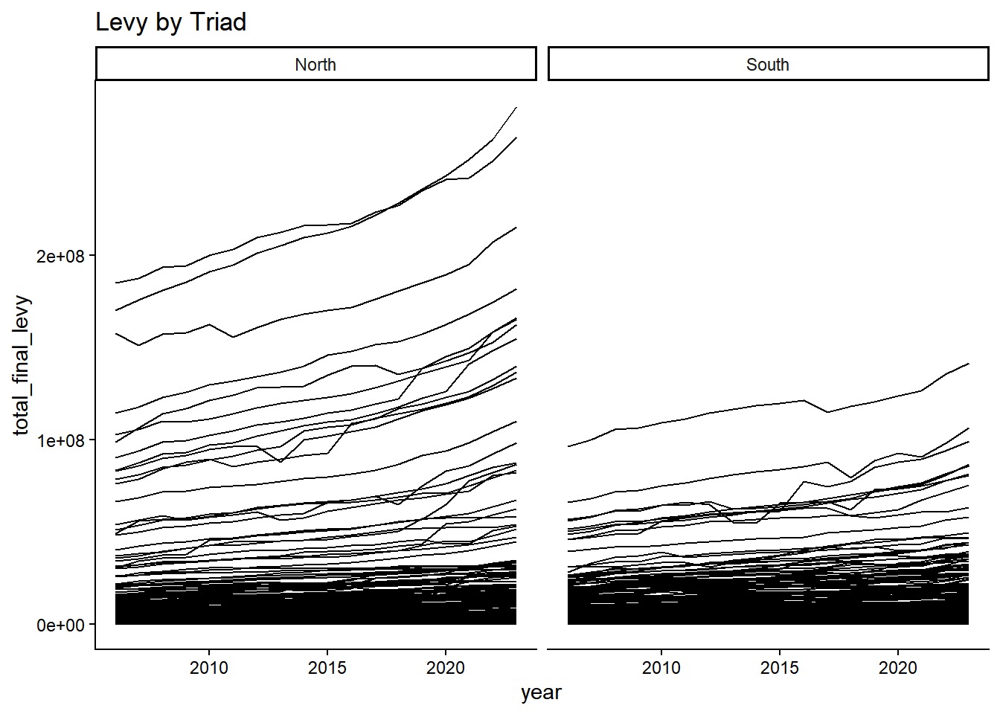
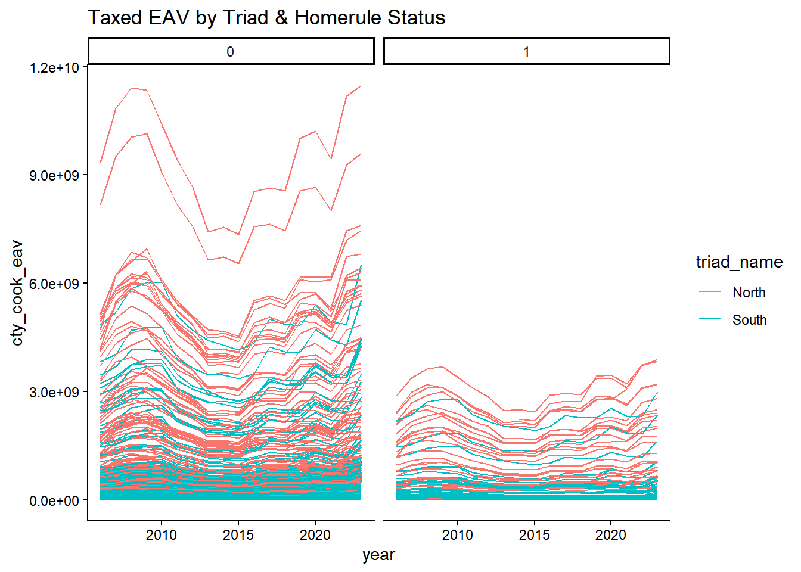
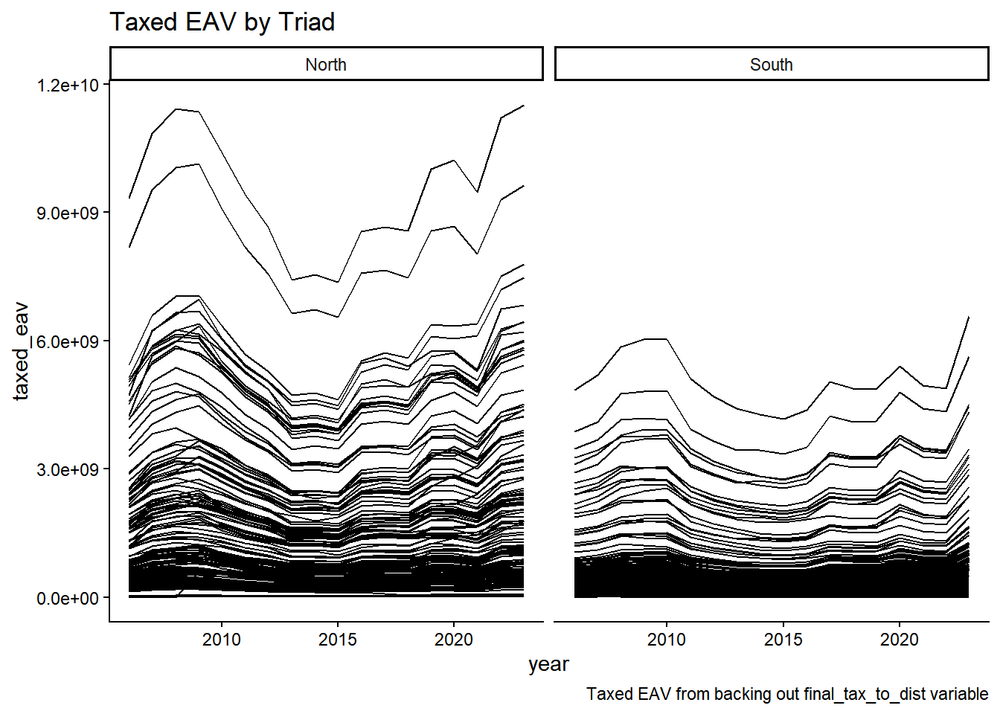
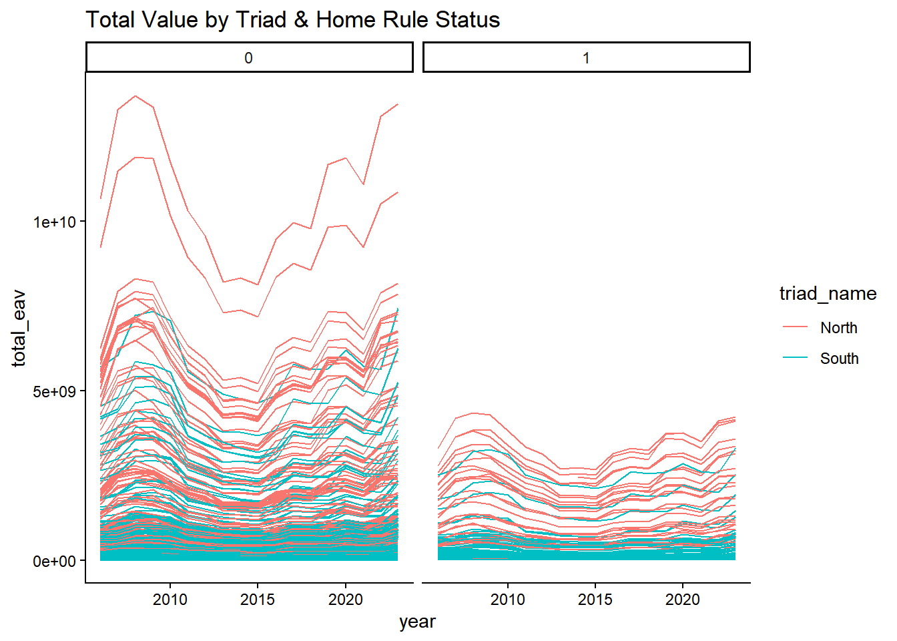
Create estimated or “true” taxbase variable: The estimated market value is smoothed between the assessment years.
Code
df <- grouped_manual |>
ungroup() |>
mutate(assess_year_eav = ifelse(reassess_year == 1, cty_cook_eav, NA)) |>
group_by(agency_group) |>
arrange(agency_group, year)|>
# Assessment Year
fill(assess_year_eav, .direction = "down") |>
mutate(
est_value = if_else(reassess_year == 1, cty_cook_eav, NA),
r = if_else(reassess_year == 1, (lead(cty_cook_eav, 3)/cty_cook_eav )^ (1/(4-1))-1, NA)
) %>%
fill(r, .direction = "down") |>
mutate(r = ifelse(reassess_year == 0 & (year == 2022 & year == 2023), NA, r)) |>
mutate(est_value = if_else(is.na(est_value), lag(est_value, 1)*(1 + r), est_value),
est_value = if_else(is.na(est_value), lag(est_value, 1)*(1 + r), est_value),
est_value = if_else(year==2023 & reassess_year == 0, NA, est_value),
est_value = if_else(year == 2022 & triad_name == "City", NA, est_value)
) |>
ungroup()Code
df <- df %>%
ungroup() %>%
mutate(flip_assess = ifelse(reassess_year == 1, "0", "1"),
# eav = cty_cook_eav, # NOTE that eav was for total EAV in the agency summary file. Here it is the taxed EAV
ln_av = log(av),
ln_eav = log(cty_cook_eav),
ln_taxed_eav = log(taxed_eav),
ln_taxed_fmv = log(taxed_fmv),
ln_fmv = log(total_fmv),
ln_levy = log(total_final_levy),
ln_est_v = log(est_value),
) %>%
group_by(agency_group) %>%
arrange(agency_group, year) %>%
mutate(
lag_eav = lag(cty_cook_eav, 1),
ln_lag_av = log(lag(av, 1)),
ln_lag_eav = log(lag(cty_cook_eav)),
ln_lag_levy = log(lag(total_final_levy, 1)),
eav_updown= ifelse(lag(cty_cook_eav, 1) < cty_cook_eav, "Up", "Down"),
ass = ifelse(lag(assess_year_eav,1) < assess_year_eav, "Up", "Down"),
ass2 = ifelse(lag(cty_cook_eav,1) < cty_cook_eav, "Up", "Down")) %>%
ungroup() Export CSV
Code
df <- read_csv("replicate_2026_03_01.csv")
df %>%
filter(is.na(assess_year_eav)) %>%
group_by(year) %>%
summarize(count = n()) %>% arrange(desc(count))
df %>%
filter(is.na(est_value)) %>%
group_by(year) %>%
summarize(count = n()) %>% arrange(desc(count))
df <- df %>%
group_by(agency_group) |>
arrange(year) |>
mutate(levy_change = round(total_final_levy-lag(total_final_levy), digits =0),
levy_pct_change = (total_final_levy-lag(total_final_levy)) / lag(total_final_levy),
levy_change = ifelse(is.na(levy_change), 0, levy_change),
eav_change = round(cty_total_eav - lag(cty_total_eav), digits = 0),
eav_pct_change = (cty_total_eav - lag(cty_total_eav))/lag(cty_total_eav),
eav_change = ifelse(is.na(eav_change), 0, eav_change),
av_pct_change = (av - lag(av))/lag(av),
d_log_levy = (ln_levy - ln_lag_levy) / ln_lag_levy,
d_log_eav = (ln_eav - ln_lag_eav) / ln_lag_eav,
) # A tibble: 2 × 2
year count
<dbl> <int>
1 2006 422
2 2007 268# A tibble: 3 × 2
year count
<dbl> <int>
1 2006 422
2 2007 268
3 2023 154If we drop Chicago, we get to keep another year of data for all of the other munis in North and South triads.
NTA Descriptive Statistics
Tables
Exported as Word Documents.
Code
library(flextable)
P5 <- function(x) quantile(x, probs = 0.05, na.rm = TRUE)
P95 <- function(x) quantile(x, probs = 0.95, na.rm = TRUE)
tbl_all_agencies <- datasummary(((`ln(EAV) Change` =d_log_eav) +
(`ln(Levy) Change`=d_log_levy) +
(`Levy % Change`=levy_pct_change ) +
(`EAV % Change` = eav_pct_change)) ~
NUnique + P0 + P5 + P25+P50+P75 + P95 +P100 + SD,
data = df |>
select(type, d_log_eav, d_log_levy, levy_pct_change, eav_pct_change) ,
fmt = 2,
#align = 'llrrrrr',
output = "flextable") # |>
tbl_all_agencies %>%
set_table_properties( layout = "autofit")
tbl <- datasummary((`Agency Type`=type)*((`ln(EAV) Change` =d_log_eav) +
(`ln(Levy) Change`=d_log_levy) +
(`Levy % Change`=levy_pct_change ) +
(`EAV % Change` = eav_pct_change)) ~
NUnique + P0 + P5 + P25+P50+P75 + P95 +P100 + SD,
data = df |>
select(type, d_log_eav, d_log_levy, levy_pct_change, eav_pct_change) ,
fmt = 2,
#align = 'llrrrrr',
output = "flextable") # |>
# mutate(across(.cols = c(levy_pct_change, eav_pct_change), ~.x*100))
tbl %>%
#border_remove() %>%
#hline_top() %>%
hline(i = c(4,8,12,16)) %>%
#align(j = 3:7, align = "right") %>%
#align(j=2, align = "right", part = "header") %>%
set_table_properties( layout = "autofit")
| NUnique | P0 | P5 | P25 | P50 | P75 | P95 | P100 | SD |
|---|---|---|---|---|---|---|---|---|---|
ln(EAV) Change | 6703 | -0.03 | -0.01 | -0.00 | -0.00 | 0.00 | 0.01 | 0.04 | 0.01 |
ln(Levy) Change | 7046 | -0.48 | -0.00 | 0.00 | 0.00 | 0.00 | 0.01 | 0.94 | 0.01 |
Levy % Change | 7046 | -0.99 | -0.03 | 0.01 | 0.03 | 0.04 | 0.10 | 182.05 | 2.15 |
EAV % Change | 6742 | -0.38 | -0.13 | -0.06 | -0.00 | 0.07 | 0.26 | 1.16 | 0.12 |
Agency Type |
| NUnique | P0 | P5 | P25 | P50 | P75 | P95 | P100 | SD |
|---|---|---|---|---|---|---|---|---|---|---|
Muni | ln(EAV) Change | 1820 | -0.02 | -0.01 | -0.00 | -0.00 | 0.00 | 0.01 | 0.03 | 0.01 |
ln(Levy) Change | 1778 | -0.07 | -0.00 | 0.00 | 0.00 | 0.00 | 0.01 | 0.08 | 0.01 | |
Levy % Change | 1778 | -0.63 | -0.02 | 0.01 | 0.03 | 0.05 | 0.14 | 2.00 | 0.09 | |
EAV % Change | 1820 | -0.26 | -0.14 | -0.06 | -0.00 | 0.07 | 0.26 | 0.68 | 0.12 | |
Other | ln(EAV) Change | 2481 | -0.03 | -0.01 | -0.00 | -0.00 | 0.00 | 0.01 | 0.04 | 0.01 |
ln(Levy) Change | 2500 | -0.48 | -0.00 | 0.00 | 0.00 | 0.00 | 0.01 | 0.94 | 0.02 | |
Levy % Change | 2500 | -0.99 | -0.04 | 0.01 | 0.02 | 0.04 | 0.09 | 182.05 | 3.61 | |
EAV % Change | 2486 | -0.38 | -0.14 | -0.06 | -0.00 | 0.07 | 0.26 | 0.84 | 0.12 | |
School | ln(EAV) Change | 2296 | -0.02 | -0.01 | -0.00 | -0.00 | 0.00 | 0.01 | 0.04 | 0.01 |
ln(Levy) Change | 2330 | -0.02 | -0.00 | 0.00 | 0.00 | 0.00 | 0.01 | 0.04 | 0.00 | |
Levy % Change | 2330 | -0.28 | -0.02 | 0.02 | 0.03 | 0.04 | 0.10 | 0.78 | 0.05 | |
EAV % Change | 2313 | -0.28 | -0.13 | -0.06 | -0.00 | 0.07 | 0.26 | 1.16 | 0.12 | |
Township | ln(EAV) Change | 475 | -0.01 | -0.01 | -0.00 | -0.00 | 0.00 | 0.01 | 0.02 | 0.00 |
ln(Levy) Change | 443 | -0.04 | -0.00 | 0.00 | 0.00 | 0.00 | 0.00 | 0.04 | 0.00 | |
Levy % Change | 443 | -0.45 | -0.02 | 0.01 | 0.03 | 0.05 | 0.07 | 0.83 | 0.06 | |
EAV % Change | 475 | -0.20 | -0.12 | -0.05 | -0.00 | 0.07 | 0.23 | 0.46 | 0.11 |
Code
Warning: Removed 430 rows containing missing values or values outside the scale range
(`geom_point()`).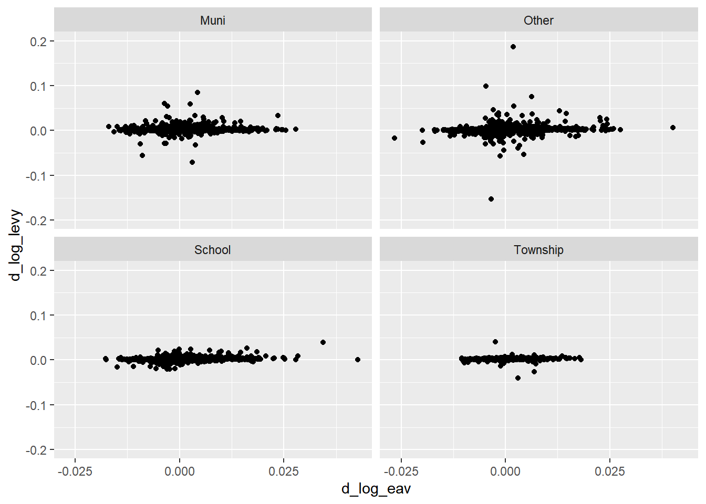
Code
Warning: Removed 1256 rows containing missing values or values outside the scale range
(`geom_point()`).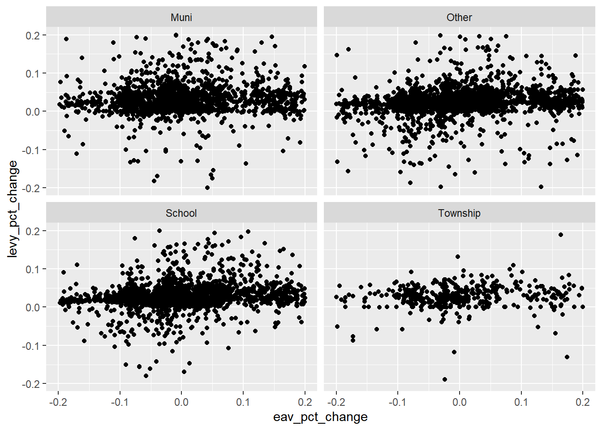
Code
Warning: Removed 2512 rows containing missing values or values outside the scale range
(`geom_point()`).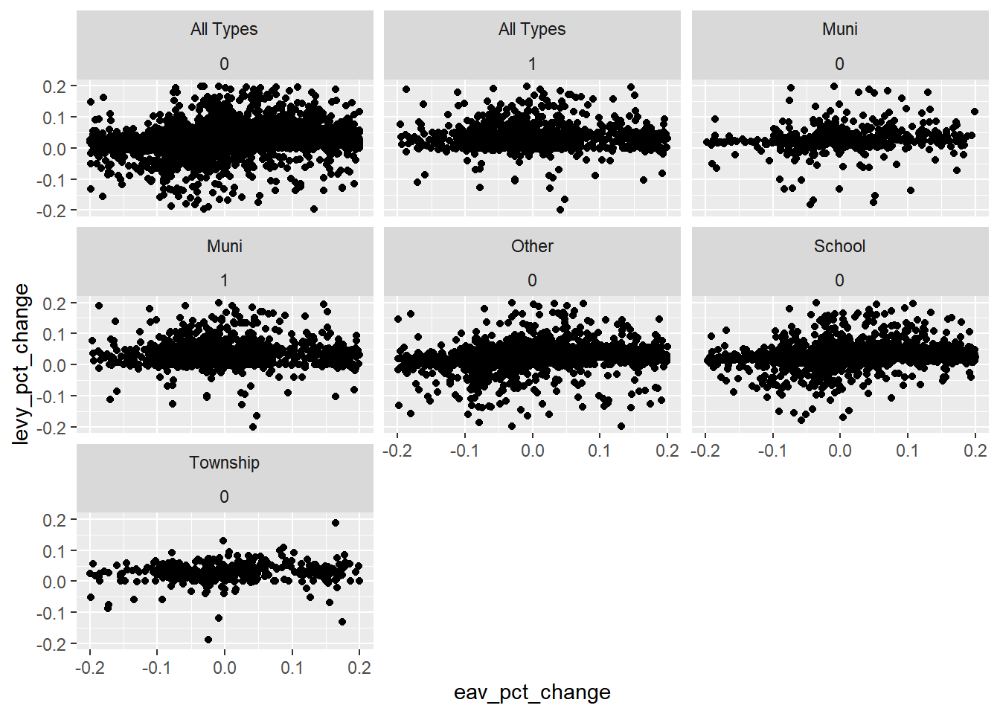
Table 2: OLS Prediction of Levy using Change in EAV
Code
NOTE: 427 observations removed because of NA values (LHS: 427, RHS: 422).
NOTE: 427 observations removed because of NA values (LHS: 427, RHS: 422).| (1) | (2) | (3) | |
|---|---|---|---|
| + p < 0.1, * p < 0.05, ** p < 0.01, *** p < 0.001 | |||
| (Intercept) | 0.002*** | ||
| (0.000) | |||
| d_log_eav | 0.105*** | 0.096* | 0.083+ |
| (0.029) | (0.047) | (0.049) | |
| Num.Obs. | 7169 | 7169 | 7169 |
| R2 | 0.002 | 0.007 | 0.013 |
| R2 Adj. | 0.002 | 0.004 | -0.051 |
| R2 Within | 0.001 | 0.000 | |
| R2 Within Adj. | 0.000 | 0.000 | |
| AIC | -40420.1 | -40425.9 | -39630.1 |
| BIC | -40399.5 | -40302.1 | -36610.8 |
| Log.Lik. | 20213.042 | ||
| F | 13.030 | ||
| RMSE | 0.01 | 0.01 | 0.01 |
| Std.Errors | IID | IID | |
| FE: year | X | X | |
| FE: agency_group | X | ||
Appendix 1
Code
x.1 x.2 x.3
Sample (type) Full sample Muni Other
Dependent Var.: ln_eav/ln_lag_eav ln_eav/ln_lag_eav ln_eav/ln_lag_eav
Constant 0.9989*** (8.26e-5) 0.9989*** (0.0002) 0.9988*** (0.0001)
reassess_year 0.0046*** (0.0001) 0.0046*** (0.0003) 0.0047*** (0.0002)
_______________ ___________________ __________________ __________________
S.E. type IID IID IID
Observations 6,752 1,712 2,400
R2 0.14072 0.14094 0.13578
Adj. R2 0.14059 0.14044 0.13542
x.4 x.5
Sample (type) School Township
Dependent Var.: ln_eav/ln_lag_eav ln_eav/ln_lag_eav
Constant 0.9989*** (0.0001) 0.9990*** (0.0003)
reassess_year 0.0046*** (0.0002) 0.0042*** (0.0005)
_______________ __________________ __________________
S.E. type IID IID
Observations 2,192 448
R2 0.14362 0.16110
Adj. R2 0.14323 0.15922
---
Signif. codes: 0 '***' 0.001 '**' 0.01 '*' 0.05 '.' 0.1 ' ' 1Code
NOTE: 4 observations removed because of NA values (LHS: 4). x.1 x.2 x.3
Sample (home_rule_ind) Full sample 0 1
Dependent Var.: d_log_levy d_log_levy d_log_levy
Constant 0.0021*** (0.0002) 0.0017*** (0.0004) 0.0024*** (0.0002)
reassess_year 0.0002 (0.0003) 0.0008 (0.0006) -6.63e-5 (0.0003)
______________________ __________________ __________________ __________________
S.E. type IID IID IID
Observations 1,708 615 1,093
R2 0.00042 0.00270 6.09e-5
Adj. R2 -0.00016 0.00108 -0.00086
---
Signif. codes: 0 '***' 0.001 '**' 0.01 '*' 0.05 '.' 0.1 ' ' 1NOTE: 4 observations removed because of NA values (LHS: 4). x.1 x.2 x.3
Sample (type) Full sample Muni Other
Dependent Var.: d_log_levy d_log_levy d_log_levy
Constant 0.0019*** (0.0002) 0.0021*** (0.0002) 0.0021*** (0.0006)
reassess_year -3.77e-5 (0.0004) 0.0002 (0.0003) -0.0006 (0.0010)
_______________ __________________ __________________ __________________
S.E. type IID IID IID
Observations 6,748 1,708 2,400
R2 1.47e-6 0.00042 0.00015
Adj. R2 -0.00015 -0.00016 -0.00027
x.4 x.5
Sample (type) School Township
Dependent Var.: d_log_levy d_log_levy
Constant 0.0015*** (7.64e-5) 0.0019*** (0.0002)
reassess_year 0.0004** (0.0001) -0.0002 (0.0004)
_______________ ___________________ __________________
S.E. type IID IID
Observations 2,192 448
R2 0.00463 0.00054
Adj. R2 0.00417 -0.00170
---
Signif. codes: 0 '***' 0.001 '**' 0.01 '*' 0.05 '.' 0.1 ' ' 1Code
NOTE: 4 observations removed because of NA values (LHS: 4). x.1 x.2 x.3
Sample (home_rule_ind) Full sample 0 1
Dependent Var.: d_log_levy d_log_levy d_log_levy
Constant 0.0021*** (0.0002) 0.0017*** (0.0004) 0.0024*** (0.0002)
reassess_year 0.0002 (0.0003) 0.0008 (0.0006) -6.63e-5 (0.0003)
______________________ __________________ __________________ __________________
S.E. type IID IID IID
Observations 1,708 615 1,093
R2 0.00042 0.00270 6.09e-5
Adj. R2 -0.00016 0.00108 -0.00086
---
Signif. codes: 0 '***' 0.001 '**' 0.01 '*' 0.05 '.' 0.1 ' ' 1
2006 2007 2008 2009 2010 2011 2012 2013 2014 2015 2016 2017 2018 2019 2020 2021
422 422 422 422 422 422 422 422 422 422 422 422 422 422 422 422
2022 2023
422 422 Table 3
Stata version of code:
gen d_av=100(log(av/l1.av)) gen d_eav=100log((aveq_factor_final)/(l1.avl1.eq_factor_final)) gen d_levy=100*(log(n_total_final_levy/l1.n_total_final_levy))
- reassessment years
- city 2009,2012, 2015,2018, 2021
- north 2010, 2013, 2016, 2019, 2022
- south 2008, 2011, 2014, 2017, 2020, 2023
Not exactly sure what he did. Numbers do not match.
NOTE: 427 observations removed because of NA values (LHS: 427, IV: 422/0).IV: First stage: d_log_eav
TSLS estimation - Dep. Var.: d_log_eav
Endo. : d_log_eav
Instr. : reassess_year
First stage: Dep. Var.: d_log_eav
Observations: 7,169
Standard-errors: IID
Estimate Std. Error t value Pr(>|t|)
(Intercept) -0.000897 0.000080 -11.2801 < 2.2e-16 ***
reassess_year 0.004729 0.000134 35.3337 < 2.2e-16 ***
---
Signif. codes: 0 '***' 0.001 '**' 0.01 '*' 0.05 '.' 0.1 ' ' 1
RMSE: 0.005414 Adj. R2: 0.148235
F-test (1st stage): stat = 1,248.5, p < 2.2e-16, on 1 and 7,167 DoF.
IV: Second stage
TSLS estimation - Dep. Var.: d_log_levy
Endo. : d_log_eav
Instr. : reassess_year
Second stage: Dep. Var.: d_log_levy
Observations: 7,169
Standard-errors: IID
Estimate Std. Error t value Pr(>|t|)
(Intercept) 0.001965 0.00018 10.899799 < 2.2e-16 ***
fit_d_log_eav -0.009032 0.07551 -0.119615 0.90479
---
Signif. codes: 0 '***' 0.001 '**' 0.01 '*' 0.05 '.' 0.1 ' ' 1
RMSE: 0.014445 Adj. R2: -1.375e-4
F-test (1st stage), d_log_eav: stat = 1,248.4681, p < 2.2e-16 , on 1 and 7,167 DoF.
Wu-Hausman: stat = 2.6783, p = 0.101771, on 1 and 7,166 DoF.NOTE: 427 observations removed because of NA values (LHS: 427, IV: 422/0).IV: First stage: d_log_eav
TSLS estimation - Dep. Var.: d_log_eav
Endo. : d_log_eav
Instr. : reassess_year
First stage: Dep. Var.: d_log_eav
Observations: 7,169
Fixed-effects: year: 17
Standard-errors: IID
Estimate Std. Error t value Pr(>|t|)
reassess_year 0.003556 9.7e-05 36.7492 < 2.2e-16 ***
---
Signif. codes: 0 '***' 0.001 '**' 0.01 '*' 0.05 '.' 0.1 ' ' 1
RMSE: 0.003309 Adj. R2: 0.681119
Within R2: 0.158855
F-test (1st stage): stat = 1,350.5, p < 2.2e-16, on 1 and 7,151 DoF.
IV: Second stage
TSLS estimation - Dep. Var.: d_log_levy
Endo. : d_log_eav
Instr. : reassess_year
Second stage: Dep. Var.: d_log_levy
Observations: 7,169
Fixed-effects: year: 17
Standard-errors: IID
Estimate Std. Error t value Pr(>|t|)
fit_d_log_eav -0.153985 0.118597 -1.29838 0.1942
---
Signif. codes: 0 '***' 0.001 '**' 0.01 '*' 0.05 '.' 0.1 ' ' 1
RMSE: 0.014422 Adj. R2: 0.004095
Within R2: 2.365e-4
F-test (1st stage), d_log_eav: stat = 1,350.5035, p < 2.2e-16, on 1 and 7,151 DoF.
Wu-Hausman: stat = 5.3003, p = 0.02135, on 1 and 7,150 DoF.Code
NOTE: 427 observations removed because of NA values (LHS: 427, IV: 422/0).IV: First stage: d_log_eav
TSLS estimation - Dep. Var.: d_log_eav
Endo. : d_log_eav
Instr. : reassess_year
First stage: Dep. Var.: d_log_eav
Observations: 7,169
Fixed-effects: year: 17, agency_group: 422
Standard-errors: IID
Estimate Std. Error t value Pr(>|t|)
reassess_year 0.003556 9.8e-05 36.1934 < 2.2e-16 ***
---
Signif. codes: 0 '***' 0.001 '**' 0.01 '*' 0.05 '.' 0.1 ' ' 1
RMSE: 0.00326 Adj. R2: 0.67121
Within R2: 0.162931
F-test (1st stage): stat = 1,310.0, p < 2.2e-16, on 1 and 6,730 DoF.
IV: Second stage
TSLS estimation - Dep. Var.: d_log_levy
Endo. : d_log_eav
Instr. : reassess_year
Second stage: Dep. Var.: d_log_levy
Observations: 7,169
Fixed-effects: year: 17, agency_group: 422
Standard-errors: IID
Estimate Std. Error t value Pr(>|t|)
fit_d_log_eav -0.154037 0.121822 -1.26445 0.20611
---
Signif. codes: 0 '***' 0.001 '**' 0.01 '*' 0.05 '.' 0.1 ' ' 1
RMSE: 0.014373 Adj. R2: -0.051253
Within R2: 2.383e-4
F-test (1st stage), d_log_eav: stat = 1,309.9625, p < 2.2e-16 , on 1 and 6,730 DoF.
Wu-Hausman: stat = 4.5366, p = 0.033214, on 1 and 6,729 DoF.Table 4
Obviously is not all of table 4. but the very first part of the break down.
Call:
lm(formula = d_log_levy ~ d_log_eav + type, data = df)
Coefficients:
(Intercept) d_log_eav typeOther typeSchool typeTownship
0.0022384 0.1048416 -0.0003992 -0.0005780 -0.0004687 Code
NOTE: 427 observations removed because of NA values (LHS: 427, RHS: 422).
NOTE: 427 observations removed because of NA values (LHS: 427, RHS: 422).| sample: Full sample | sample: Muni | sample: Other | sample: School | sample: Township | sample: Full sample | sample: Muni | sample: Other | sample: School | sample: Township | |
|---|---|---|---|---|---|---|---|---|---|---|
| + p < 0.1, * p < 0.05, ** p < 0.01, *** p < 0.001 | ||||||||||
| d_log_eav | 0.096* | 0.034 | 0.078 | 0.154*** | 0.040 | 0.083+ | 0.039 | 0.053 | 0.140*** | 0.040 |
| (0.047) | (0.037) | (0.120) | (0.016) | (0.055) | (0.049) | (0.038) | (0.125) | (0.017) | (0.055) | |
| Num.Obs. | 7169 | 1814 | 2550 | 2329 | 476 | 7169 | 1814 | 2550 | 2329 | 476 |
| R2 | 0.007 | 0.031 | 0.009 | 0.113 | 0.106 | 0.013 | 0.080 | 0.013 | 0.154 | 0.165 |
| R2 Adj. | 0.004 | 0.022 | 0.002 | 0.107 | 0.073 | -0.051 | 0.013 | -0.056 | 0.094 | 0.080 |
| R2 Within | 0.001 | 0.000 | 0.000 | 0.037 | 0.001 | 0.000 | 0.001 | 0.000 | 0.032 | 0.001 |
| R2 Within Adj. | 0.000 | -0.000 | -0.000 | 0.037 | -0.001 | 0.000 | 0.000 | -0.000 | 0.031 | -0.001 |
| AIC | -40425.9 | -13723.8 | -11870.5 | -20791.1 | -4025.8 | -39630.1 | -13605.9 | -11582.1 | -20628.8 | -4004.2 |
| BIC | -40302.1 | -13624.7 | -11765.3 | -20687.5 | -3950.8 | -36610.8 | -12923.5 | -10606.2 | -19742.8 | -3816.7 |
| RMSE | 0.01 | 0.01 | 0.02 | 0.00 | 0.00 | 0.01 | 0.01 | 0.02 | 0.00 | 0.00 |
| Std.Errors | IID | IID | IID | IID | IID | IID | IID | IID | IID | IID |
| FE: year | X | X | X | X | X | X | X | X | X | X |
| FE: agency_group | X | X | X | X | X | |||||
Table 5
Call:
lm(formula = d_log_levy ~ d_log_eav * eav_updown, data = df)
Coefficients:
(Intercept) d_log_eav eav_updownUp
0.0021120 0.1604865 -0.0002632
d_log_eav:eav_updownUp
-0.0591112 Code
NOTE: 427 observations removed because of NA values (LHS: 427, RHS: 422).
NOTE: 427 observations removed because of NA values (LHS: 427, RHS: 422).| sample: Full sample | sample: Muni | sample: Other | sample: School | sample: Township | sample: Full sample | sample: Muni | sample: Other | sample: School | sample: Township | |
|---|---|---|---|---|---|---|---|---|---|---|
| + p < 0.1, * p < 0.05, ** p < 0.01, *** p < 0.001 | ||||||||||
| d_log_eav | 0.062 | -0.043 | -0.015 | 0.242*** | 0.331* | 0.026 | -0.022 | -0.093 | 0.212*** | 0.356* |
| (0.126) | (0.105) | (0.299) | (0.046) | (0.167) | (0.134) | (0.108) | (0.319) | (0.048) | (0.169) | |
| eav_updownUp | -0.000 | -0.000 | -0.001 | 0.000 | -0.000 | -0.000 | -0.000 | -0.000 | 0.000 | -0.000 |
| (0.001) | (0.001) | (0.002) | (0.000) | (0.001) | (0.001) | (0.001) | (0.002) | (0.000) | (0.001) | |
| d_log_eav × eav_updownUp | 0.052 | 0.117 | 0.151 | -0.116* | -0.341+ | 0.078 | 0.098 | 0.210 | -0.094+ | -0.370* |
| (0.136) | (0.113) | (0.329) | (0.050) | (0.177) | (0.145) | (0.116) | (0.352) | (0.052) | (0.180) | |
| Num.Obs. | 7169 | 1814 | 2550 | 2329 | 476 | 7169 | 1814 | 2550 | 2329 | 476 |
| R2 | 0.007 | 0.033 | 0.009 | 0.116 | 0.114 | 0.013 | 0.081 | 0.013 | 0.156 | 0.173 |
| R2 Adj. | 0.004 | 0.022 | 0.002 | 0.109 | 0.077 | -0.051 | 0.013 | -0.057 | 0.095 | 0.085 |
| R2 Within | 0.001 | 0.002 | 0.000 | 0.040 | 0.009 | 0.000 | 0.002 | 0.000 | 0.034 | 0.011 |
| R2 Within Adj. | 0.000 | 0.000 | -0.001 | 0.039 | 0.003 | 0.000 | -0.000 | -0.001 | 0.032 | 0.004 |
| AIC | -40422.3 | -13722.3 | -11866.9 | -20794.5 | -4025.7 | -39626.5 | -13604.0 | -11578.6 | -20629.6 | -4004.9 |
| BIC | -40284.7 | -13612.2 | -11750.1 | -20679.5 | -3942.4 | -36593.5 | -12910.6 | -10591.0 | -19732.1 | -3809.2 |
| RMSE | 0.01 | 0.01 | 0.02 | 0.00 | 0.00 | 0.01 | 0.01 | 0.02 | 0.00 | 0.00 |
| Std.Errors | IID | IID | IID | IID | IID | IID | IID | IID | IID | IID |
| FE: year | X | X | X | X | X | X | X | X | X | X |
| FE: agency_group | X | X | X | X | X | |||||
Table 6
Table 6: IV Predict levy using d_eav with assymmetries
Code
NOTE: 427 observations removed because of NA values (LHS: 427, RHS: 422, IV: 422/0).Notes from the estimations:
[x 5] The exogenous variable 'd_log_eav:eav_updownUp' has been removed because
of collinearity (see $collin.var).NOTE: 427 observations removed because of NA values (LHS: 427, RHS: 422, IV: 422/0).Notes from the estimations:
[x 5] The exogenous variable 'd_log_eav:eav_updownUp' has been removed because
of collinearity (see $collin.var).| sample: Full sample | sample: Muni | sample: Other | sample: School | sample: Township | sample: Full sample | sample: Muni | sample: Other | sample: School | sample: Township | |
|---|---|---|---|---|---|---|---|---|---|---|
| + p < 0.1, * p < 0.05, ** p < 0.01, *** p < 0.001 | ||||||||||
| fit_d_log_eav | 0.108* | 0.060 | 0.117 | 0.132*** | -0.012 | 0.099+ | 0.062 | 0.103 | 0.122*** | -0.016 |
| (0.054) | (0.043) | (0.141) | (0.018) | (0.061) | (0.056) | (0.043) | (0.147) | (0.019) | (0.061) | |
| d_log_eav × eav_updownDown | -0.061 | -0.142 | -0.172 | 0.125** | 0.337+ | -0.085 | -0.121 | -0.225 | 0.102* | 0.368* |
| (0.133) | (0.109) | (0.323) | (0.048) | (0.174) | (0.142) | (0.113) | (0.347) | (0.050) | (0.177) | |
| Num.Obs. | 7169 | 1814 | 2550 | 2329 | 476 | 7169 | 1814 | 2550 | 2329 | 476 |
| R2 | 0.007 | 0.032 | 0.009 | 0.116 | 0.114 | 0.013 | 0.081 | 0.013 | 0.156 | 0.173 |
| R2 Adj. | 0.004 | 0.023 | 0.002 | 0.109 | 0.079 | -0.051 | 0.014 | -0.056 | 0.096 | 0.087 |
| R2 Within | 0.001 | 0.001 | 0.000 | 0.040 | 0.009 | 0.000 | 0.001 | 0.000 | 0.034 | 0.011 |
| R2 Within Adj. | 0.000 | 0.000 | -0.001 | 0.039 | 0.005 | 0.000 | 0.000 | -0.001 | 0.033 | 0.007 |
| AIC | -40424.2 | -13723.5 | -11868.8 | -20795.9 | -4027.7 | -39628.5 | -13605.2 | -11580.6 | -20631.2 | -4006.9 |
| BIC | -40293.5 | -13618.9 | -11757.8 | -20686.5 | -3948.5 | -36602.3 | -12917.3 | -10598.8 | -19739.4 | -3815.3 |
| RMSE | 0.01 | 0.01 | 0.02 | 0.00 | 0.00 | 0.01 | 0.01 | 0.02 | 0.00 | 0.00 |
| Std.Errors | IID | IID | IID | IID | IID | IID | IID | IID | IID | IID |
| FE: year | X | X | X | X | X | X | X | X | X | X |
| FE: agency_group | X | X | X | X | X | |||||
Table 7: Lags
Code
munis_and_schools <- list(
"Municipalities" = list(
"All Municipalities" = feols(d_log_levy ~ log(d_log_eav) +
l(d_log_eav, 1) | agency_group + year,
data = df |> filter(type == "Muni"),
vcov = ~agency_group,
panel.id = c("agency_group", "year")
),
"Homerule" = feols(d_log_levy ~ log(d_log_eav) +
l(d_log_eav, 1) | agency_group + year,
data = df |> filter(type == "Muni" & home_rule_ind == 1),
vcov = ~agency_group,
panel.id = c("agency_group", "year")
),
"Non-Homerule" = feols(d_log_levy ~ log(d_log_eav) +
l(d_log_eav, 1) | agency_group + year,
data = df |> filter(type == "Muni" & home_rule_ind == 0),
vcov = ~agency_group,
panel.id = c("agency_group", "year")
)
),
"Schools" = list(
"All Schools" = feols(d_log_levy ~ log(d_log_eav) +
l(d_log_eav, 1) | agency_group + year,
data = df |> filter(type == "School"),
vcov = ~agency_group,
panel.id = c("agency_group", "year")
),
"Elementary" = feols(d_log_levy ~ log(d_log_eav) +
l(d_log_eav, 1) | agency_group + year,
data = df |> filter(type == "School" & minor_type == "ELEMENTARY"),
vcov = ~agency_group,
panel.id = c("agency_group", "year")
),
"Secondary" = feols(d_log_levy ~ log(d_log_eav) +
l(d_log_eav, 1) | agency_group + year,
data = df |> filter(type == "School" & minor_type == "SECONDARY"),
vcov = ~agency_group,
panel.id = c("agency_group", "year")
)
),
"Other" = list(
"Townships" = feols(d_log_levy ~ log(d_log_eav) +
l(d_log_eav, 1) | agency_group + year,
data = df |> filter(type == "Township"),
vcov = ~agency_group,
panel.id = c("agency_group", "year")
),
"Special District" = feols(d_log_levy ~ log(d_log_eav) +
l(d_log_eav, 1) | agency_group + year,
data = df |> filter(type == "Other"),
vcov = ~agency_group,
panel.id = c("agency_group", "year")
)
)
)Warning in log(d_log_eav): NaNs producedNOTE: 1,151 observations removed because of NA values (LHS: 112, RHS: 1,150).Warning in log(d_log_eav): NaNs producedNOTES: 727 observations removed because of NA values (LHS: 69, RHS: 726).
1/0 fixed-effect singleton was removed (1 observation).Warning in log(d_log_eav): NaNs producedNOTES: 427 observations removed because of NA values (LHS: 43, RHS: 427).
1/1 fixed-effect singletons were removed (2 observations).Warning in log(d_log_eav): NaNs producedNOTES: 1,478 observations removed because of NA values (LHS: 137, RHS: 1,478).
0/2 fixed-effect singletons were removed (2 observations).Warning in log(d_log_eav): NaNs producedNOTES: 1,190 observations removed because of NA values (LHS: 111, RHS: 1,190).
0/2 fixed-effect singletons were removed (2 observations).Warning in log(d_log_eav): NaNs producedNOTES: 263 observations removed because of NA values (LHS: 24, RHS: 263).
0/2 fixed-effect singletons were removed (2 observations).Warning in log(d_log_eav): NaNs producedNOTES: 305 observations removed because of NA and infinite values (LHS: 28, RHS: 305).
0/2 fixed-effect singletons were removed (2 observations).Warning in log(d_log_eav): NaNs producedNOTES: 1,602 observations removed because of NA values (LHS: 150, RHS: 1,602).
0/1 fixed-effect singleton was removed (1 observation).Code
| Municipalities | Schools | Other | ||||||
|---|---|---|---|---|---|---|---|---|
| All Municipalities | Homerule | Non-Homerule | All Schools | Elementary | Secondary | Townships | Special District | |
| + p < 0.1, * p < 0.05, ** p < 0.01, *** p < 0.001 | ||||||||
| log(d_log_eav) | 0 | 0+ | 0 | 0** | 0** | 0 | 0 | 0 |
| (0) | (0) | (0) | (0) | (0) | (0) | (0) | (0) | |
| l(d_log_eav, 1) | -0.06 | 0.03 | 0.04 | 0.03 | 0.03 | 0.02 | 0.01 | 0.06 |
| (0.08) | (0.1) | (0.14) | (0.04) | (0.05) | (0.1) | (0.09) | (0.36) | |
| Num.Obs. | 775 | 499 | 270 | 986 | 784 | 183 | 197 | 1097 |
| R2 | 0.127 | 0.265 | 0.126 | 0.279 | 0.282 | 0.391 | 0.270 | 0.136 |
| R2 Adj. | -0.033 | 0.120 | -0.084 | 0.150 | 0.145 | 0.246 | 0.095 | -0.015 |
| R2 Within | 0.002 | 0.010 | 0.000 | 0.018 | 0.024 | 0.002 | 0.000 | 0.004 |
| R2 Within Adj. | -0.001 | 0.005 | -0.009 | 0.015 | 0.021 | -0.012 | -0.012 | 0.002 |
Robustness Check Slide: Has est_value with eav and lagged eav.
Table 8
Code
munis_and_schools <- list(
"Municipalities" = list(
#
# "All Municipalities" = feols(log(total_final_levy) ~ log(eav) | agency_group + year,
# data = df |> filter(type == "Muni"),
# vcov = ~agency_group,
# panel.id = c("agency_group", "year")
# ),
"Homerule" = feols(d_log_levy ~ d_log_eav | agency_group + year,
data = df |> filter(type == "Muni" & home_rule_ind == 1),
vcov = ~agency_group,
panel.id = c("agency_group", "year")
),
"Non-Homerule" = feols(d_log_levy ~ d_log_eav | agency_group + year,
data = df |> filter(type == "Muni" & home_rule_ind == 0),
vcov = ~agency_group,
panel.id = c("agency_group", "year")
)
),
"Schools" = list(
# "All Schools" = feols(log(total_final_levy) ~ log(eav) | agency_group + year,
# data = df |> filter(type == "School"),
# vcov = ~agency_group,
# panel.id = c("agency_group", "year")
# ),
#
"Elementary" = feols(d_log_levy ~ d_log_eav | agency_group + year,
data = df |> filter(type == "School" & minor_type == "ELEMENTARY"),
vcov = ~agency_group,
panel.id = c("agency_group", "year")
),
"Secondary" = feols(d_log_levy ~ d_log_eav | agency_group + year,
data = df |> filter(type == "School" & minor_type == "SECONDARY"),
vcov = ~agency_group,
panel.id = c("agency_group", "year")
)
),
"Other" = list(
"Special District" = feols(d_log_levy ~ d_log_eav | agency_group + year,
data = df |> filter(type == "Other"),
vcov = ~agency_group,
panel.id = c("agency_group", "year")
),
"Townships" = feols(d_log_levy ~ d_log_eav | agency_group + year,
data = df |> filter(type == "Township"),
vcov = ~agency_group,
panel.id = c("agency_group", "year")
)
)
)
munis_and_schools_formatted <- modelsummary(munis_and_schools,
shape = "cbind",
#coef_map = name_map,
fmt = function(x) round(x, 2),
#gof_omit = "AIC|BIC|RMSE|Std.Errors|FE",
stars = TRUE)
munis_and_schools_formatted| Municipalities | Schools | Other | ||||
|---|---|---|---|---|---|---|
| Homerule | Non-Homerule | Elementary | Secondary | Special District | Townships | |
| + p < 0.1, * p < 0.05, ** p < 0.01, *** p < 0.001 | ||||||
| d_log_eav | 0.09 | -0.03 | 0.16** | 0.03 | 0.05 | 0.04 |
| (0.06) | (0.07) | (0.06) | (0.03) | (0.07) | (0.04) | |
| Num.Obs. | 1158 | 656 | 1865 | 424 | 2550 | 476 |
| R2 | 0.154 | 0.092 | 0.157 | 0.315 | 0.013 | 0.165 |
| R2 Adj. | 0.087 | 0.005 | 0.095 | 0.241 | -0.056 | 0.080 |
| R2 Within | 0.007 | 0.000 | 0.038 | 0.004 | 0.000 | 0.001 |
| R2 Within Adj. | 0.006 | -0.001 | 0.037 | 0.001 | -0.000 | -0.001 |
| AIC | -9426.8 | -4530.2 | -16246.1 | -4204.3 | -11582.1 | -4004.2 |
| BIC | -8987.1 | -4270.0 | -15532.6 | -4034.2 | -10606.2 | -3816.7 |
| RMSE | 0.00 | 0.01 | 0.00 | 0.00 | 0.02 | 0.00 |
| Std.Errors | by: agency_group | by: agency_group | by: agency_group | by: agency_group | by: agency_group | by: agency_group |
| FE: agency_group | X | X | X | X | X | X |
| FE: year | X | X | X | X | X | X |
Visualizations
Bar Charts/Histograms
Code
## All agencies
df |>
filter(year == 2022) |>
mutate(type = ifelse(type == "Muni", "Municipality", type)) |>
ggplot(aes(x = type)) +
geom_bar(fill = "blue4") +
geom_text(stat = 'count', aes(label = ..count.., y = ..count..), vjust = -0.5, color = "black") +
labs(
title = "Taxing Agency Count by Agency Type",
subtitle = "Values Are Consistent Across All Years",
x = "Agency Type",
y = "N"
) +
theme_classic() +
theme(legend.position = "none",
axis.title.y = element_text(angle = 0))Warning: The dot-dot notation (`..count..`) was deprecated in ggplot2 3.4.0.
ℹ Please use `after_stat(count)` instead.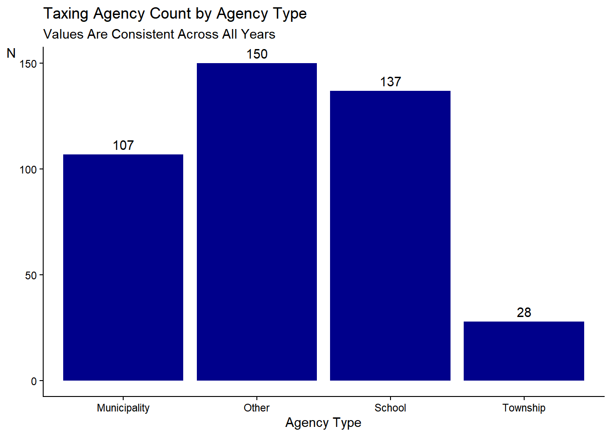
Code
# Schools
df |>
filter(year == 2022) |>
filter(type == "School") |>
filter(minor_type %in% c("ELEMENTARY", "SECONDARY")) |>
ggplot(aes(x = minor_type, fill = minor_type)) +
geom_bar(fill = "blue4") +
geom_text(stat = 'count', aes(label = ..count.., y = ..count..), vjust = -0.5, color = "black") +
labs(
title = "Schools: Primary and Secondary",
subtitle = "Values Are Consistent Across All Years",
x = "School Agency Type",
y = "N"
) +
theme_classic() +
#scale_fill_manual(values = c(brewer.pal(n = 6, "Blues")[3], brewer.pal(n = 6, "Blues")[5])) + # Specify colors individually
theme(legend.position = "none",
axis.title.y = element_text(angle = 0))
# Munis
df |>
filter(year == 2022) |>
filter(type == "Muni") |>
mutate(home_rule = ifelse(home_rule_ind == 1, "Yes", "No")) |> # Create a new column for home rule status
ggplot(aes(x = home_rule, fill = home_rule)) + # Use the new column for x-axis
geom_bar(fill = "blue4") +
geom_text(stat = 'count', aes(label = ..count.., y = ..count..), vjust = -0.5, color = "black") +
labs(
title = "Municipalities by Home Rule Status",
subtitle = "Values Are Consistent Across All Years",
x = "Home Rule Status",
y = "N"
) +
theme_classic() +
theme(legend.position = "none",
axis.title.y = element_text(angle = 0))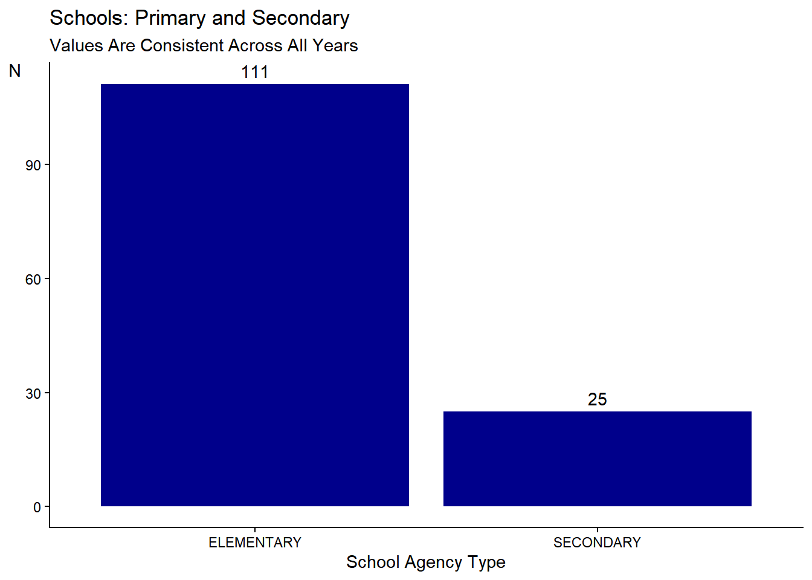
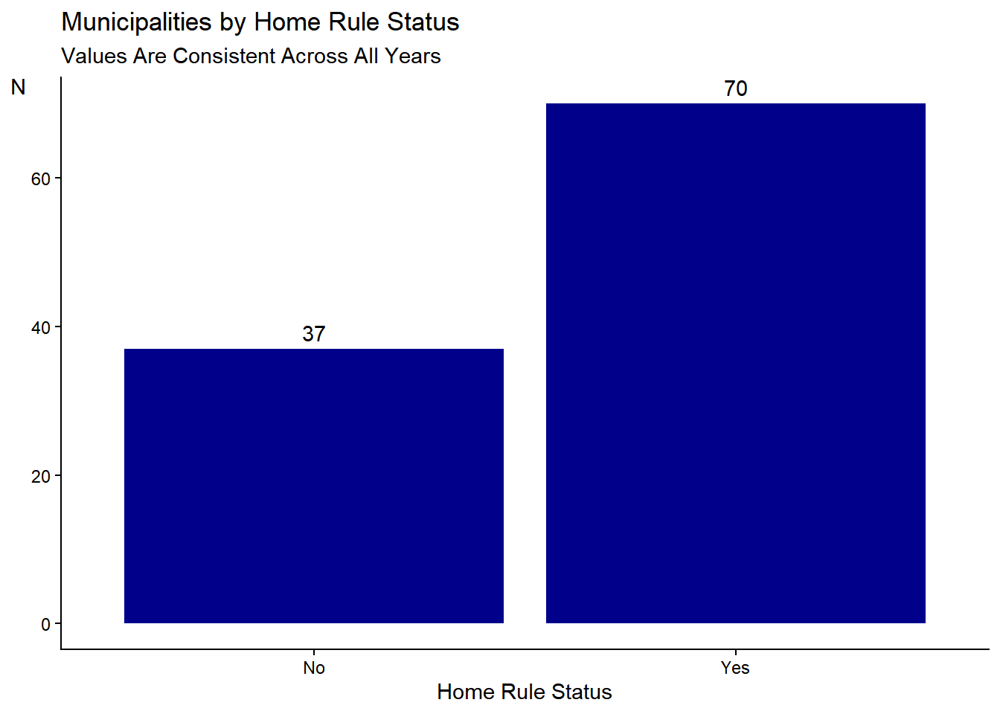
Code
df |>
filter(year == 2022) |>
mutate(type = ifelse(type == "Muni", "Municipality", type)) |>
group_by(type, home_rule_ind) |>
ggplot(aes(x=type, fill = home_rule_ind)) +
geom_bar() +
geom_text(stat = 'count', aes(label = ..count.., y = ..count..), vjust = -0.5, color = "black") +
labs(
title = "Taxing Agency Count by Agency Type",
caption = "Agency counts are consistent across all years",
x = "Agency Type",
y = "N",
fill = "Homerule Status"
) +
theme_classic() +
scale_fill_manual(values = brewer.pal(n = 6, "Blues")[3:6]) +
theme(#legend.position = "none",
axis.title.y = element_text(angle = 0))Warning: The following aesthetics were dropped during statistical transformation: fill.
ℹ This can happen when ggplot fails to infer the correct grouping structure in
the data.
ℹ Did you forget to specify a `group` aesthetic or to convert a numerical
variable into a factor?
The following aesthetics were dropped during statistical transformation: fill.
ℹ This can happen when ggplot fails to infer the correct grouping structure in
the data.
ℹ Did you forget to specify a `group` aesthetic or to convert a numerical
variable into a factor?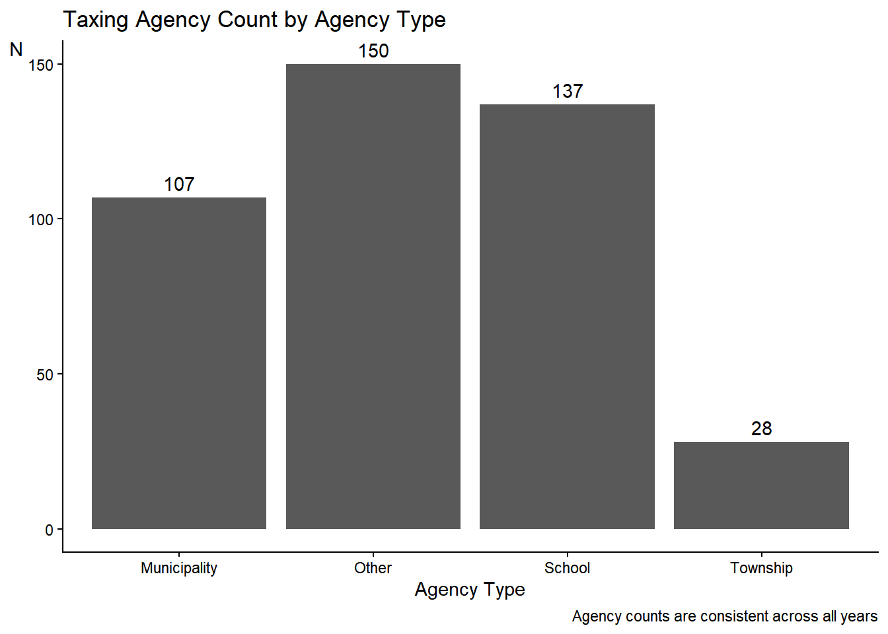
Code
df %>%
ungroup() |>
filter(type == "Muni") |>
mutate(across(.cols = c(taxed_eav, total_eav, cty_cook_eav, est_value), ~.x/1000000) ) %>%
group_by(year, triad_name) %>%
summarize(
eav_total = sum(total_eav),
eav_taxed = sum(taxed_eav),
eav = sum(cty_cook_eav),
est_value = sum(est_value)) %>%
ggplot(lwd = 3) +
geom_line(aes(x=year, y = eav, group = triad_name)) +
geom_line(aes(x=year, y = eav_total, group = triad_name, color = triad_name), alpha = .5, , color = "gray")+
geom_line(aes(x=year, y = est_value, group = triad_name, color = triad_name), alpha = .5)+
geom_line(aes(x=year, y = eav_taxed, group = triad_name, color = triad_name), alpha = .5)+
geom_point(aes(x=year, y = est_value, fill = triad_name, group = triad_name), alpha = .5) +
scale_x_continuous(breaks = seq(ceiling(min(2006)), floor(max(2023)), by = 2)) +
scale_y_continuous(labels = scales::dollar) +
labs(title = "Summed Municipality EAV by Triad", y = "Tax Base (in Millions)", x = "",
caption = "Light Gray line is total Value instead of Taxed Value") + theme_classic()`summarise()` has grouped output by 'year'. You can override using the
`.groups` argument.Warning in fortify(data, ...): Arguments in `...` must be used.
✖ Problematic argument:
• lwd = 3
ℹ Did you misspell an argument name?Warning: Removed 4 rows containing missing values or values outside the scale range
(`geom_line()`).Warning: Removed 4 rows containing missing values or values outside the scale range
(`geom_point()`).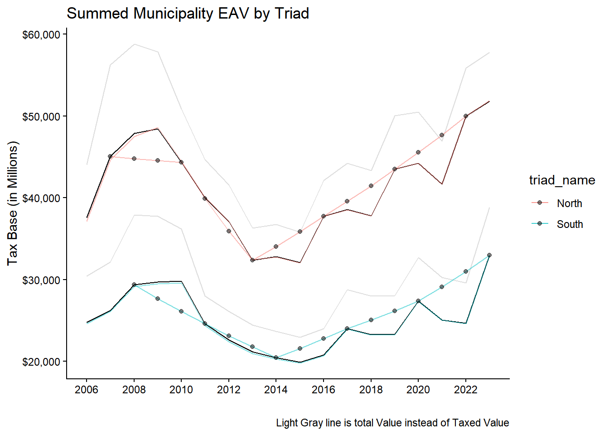
Old Models
Models by Triad
Code
df <- df |> mutate(eav = cty_cook_eav)
all_models <- list(
"North" = feols(d_log_levy ~ d_log_eav*reassess_year | agency_group + year,
data = (df %>% filter(triad_name == "North")),
vcov = ~agency_group,
panel.id = c("agency_group", "year")
),
"South" = feols(d_log_levy ~ d_log_eav*reassess_year | agency_group + year,
data = (df %>% filter(triad_name == "South")),
vcov = ~agency_group,
panel.id = c("agency_group", "year")
)
)NOTE: 157 observations removed because of NA values (LHS: 157, RHS: 154).The variable 'reassess_year' has been removed because of collinearity (see
$collin.var).NOTE: 270 observations removed because of NA values (LHS: 270, RHS: 268).The variable 'reassess_year' has been removed because of collinearity (see
$collin.var).
| North | South |
|---|---|---|
d_log_eav | 0.699*** | -0.042 |
(0.129) | (0.303) | |
d_log_eav × reassess_year | -0.627*** | 0.497 |
(0.123) | (0.668) | |
Num.Obs. | 2615 | 4554 |
R2 | 0.093 | 0.015 |
R2 Adj. | 0.030 | -0.051 |
R2 Within | 0.040 | 0.002 |
R2 Within Adj. | 0.039 | 0.002 |
AIC | -19315.2 | -23388.9 |
BIC | -18305.7 | -21551.7 |
RMSE | 0.01 | 0.02 |
Std.Errors | by: agency_group | by: agency_group |
FE: agency_group | X | X |
FE: year | X | X |
+ p < 0.1, * p < 0.05, ** p < 0.01, *** p < 0.001 | ||
Year over year change
Code
quants <- c(.5, .95)
library(stats)
q = c(.5, .95)
df |>
ungroup() |>
group_by(year) |>
filter(year > 2006) |>
mutate(
# eav_quant = quantile(eav_change, probs = c(.5, .95), na.rm=TRUE),
eavquant05 = round(quantile(eav_change, probs = q[1])),
eavquant90 = round(quantile(eav_change, probs = q[2])),
# levy_quant = quantile(levy_change, probs=c(.5, .95),na.rm=TRUE),
levyquant05 = round(quantile(levy_change, probs = q[1])),
levyquant95 = round(quantile(levy_change, probs = q[2])),
)# A tibble: 7,174 × 58
# Groups: year [17]
year agency_group agency_name agency_num total_final_levy major_type
<dbl> <chr> <chr> <chr> <dbl> <chr>
1 2007 Acorn Public Librar… ACORN PUBL… 060010000 890440 MISCELLAN…
2 2007 Alsip VILLAGE OF… 030010000 6200201 MUNICIPAL…
3 2007 Alsip Merrionette P… ALSIP MERR… 060020000 2353352 MISCELLAN…
4 2007 Alsip Park District ALSIP PARK… 050010000 2438122 MISCELLAN…
5 2007 Arlington Heights VILLAGE OF… 030020000 38363139 MUNICIPAL…
6 2007 Arlington Heights P… ARLINGTON … 050020000 12914014 MISCELLAN…
7 2007 Arlington Heights T… ARLINGTON … 042150000 175769291 SCHOOL
8 2007 Barrington Public L… BARRINGTON… 060030000 2567728 MISCELLAN…
9 2007 Barrington Township TOWN BARRI… 020010000 342990 MUNICIPAL…
10 2007 Bedford Park VILLAGE OF… 030060000 9764218 MUNICIPAL…
# ℹ 7,164 more rows
# ℹ 52 more variables: minor_type <chr>, cty_cook_eav <dbl>,
# cty_total_eav <dbl>, total_fmv <dbl>, taxed_fmv <dbl>, taxed_eav <dbl>,
# total_eav <dbl>, av <dbl>, triad_name <chr>, agency_count <dbl>,
# reassess_year <dbl>, home_rule_ind <dbl>, flag_drop <lgl>,
# c2_median_fmv <dbl>, c2_median_fmv_taxed <dbl>, c2_sd_fmv <dbl>,
# c2_sd_fmv_taxed <dbl>, bundled <dbl>, uniqueid <chr>, first2_dig <chr>, …Code
`stat_bin()` using `bins = 30`. Pick better value `binwidth`.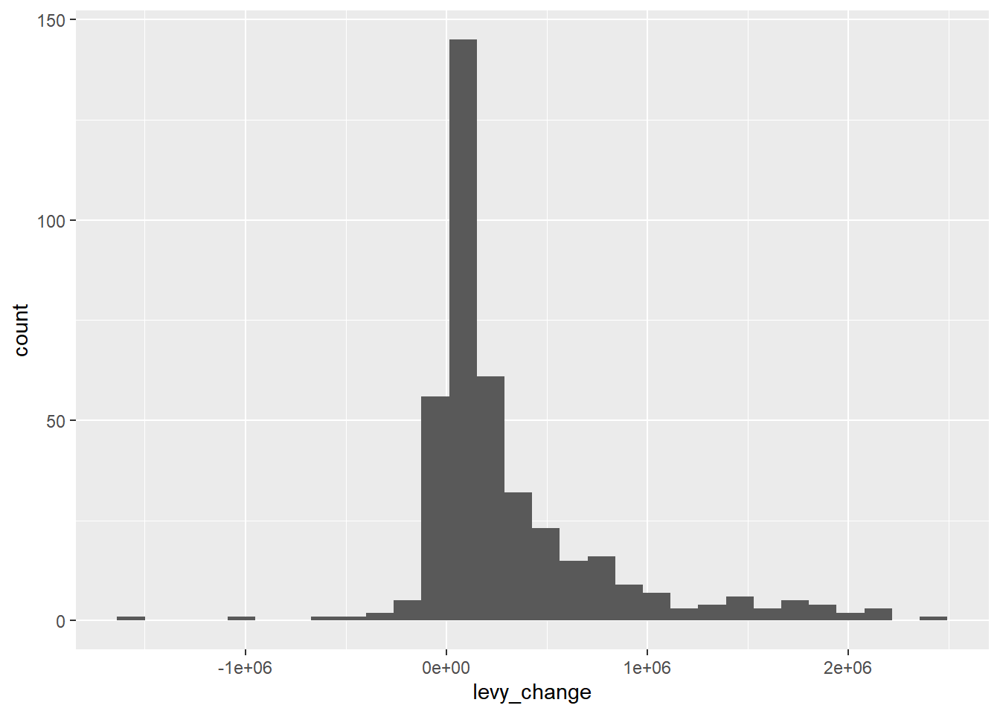
Code
`stat_bin()` using `bins = 30`. Pick better value `binwidth`.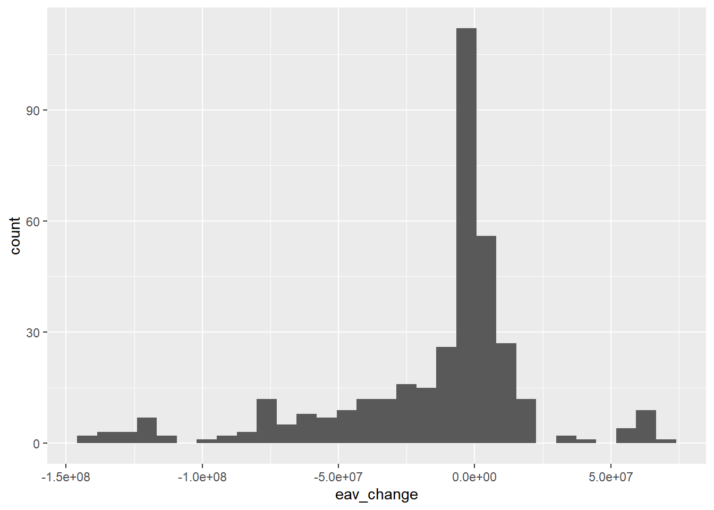
# A tibble: 2,522 × 54
# Groups: agency_group [422]
year agency_group agency_name agency_num total_final_levy major_type
<dbl> <chr> <chr> <chr> <dbl> <chr>
1 2006 Acorn Public Librar… ACORN PUBL… 060010000 860897 MISCELLAN…
2 2006 Alsip VILLAGE OF… 030010000 5740624 MUNICIPAL…
3 2006 Alsip Merrionette P… ALSIP MERR… 060020000 2280203 MISCELLAN…
4 2006 Alsip Park District ALSIP PARK… 050010000 2374624 MISCELLAN…
5 2006 Arlington Heights VILLAGE OF… 030020000 36783532 MUNICIPAL…
6 2006 Arlington Heights P… ARLINGTON … 050020000 12531652 MISCELLAN…
7 2006 Arlington Heights T… ARLINGTON … 042150000 170089071 SCHOOL
8 2006 Barrington Public L… BARRINGTON… 060030000 2351432 MISCELLAN…
9 2006 Barrington Township TOWN BARRI… 020010000 342990 MUNICIPAL…
10 2006 Bedford Park VILLAGE OF… 030060000 9565736 MUNICIPAL…
# ℹ 2,512 more rows
# ℹ 48 more variables: minor_type <chr>, cty_cook_eav <dbl>,
# cty_total_eav <dbl>, total_fmv <dbl>, taxed_fmv <dbl>, taxed_eav <dbl>,
# total_eav <dbl>, av <dbl>, triad_name <chr>, agency_count <dbl>,
# reassess_year <dbl>, home_rule_ind <dbl>, flag_drop <lgl>,
# c2_median_fmv <dbl>, c2_median_fmv_taxed <dbl>, c2_sd_fmv <dbl>,
# c2_sd_fmv_taxed <dbl>, bundled <dbl>, uniqueid <chr>, first2_dig <chr>, …# A tibble: 1,243 × 54
# Groups: agency_group [422]
year agency_group agency_name agency_num total_final_levy major_type
<dbl> <chr> <chr> <chr> <dbl> <chr>
1 2006 Acorn Public Librar… ACORN PUBL… 060010000 860897 MISCELLAN…
2 2006 Alsip VILLAGE OF… 030010000 5740624 MUNICIPAL…
3 2006 Alsip Merrionette P… ALSIP MERR… 060020000 2280203 MISCELLAN…
4 2006 Alsip Park District ALSIP PARK… 050010000 2374624 MISCELLAN…
5 2006 Arlington Heights VILLAGE OF… 030020000 36783532 MUNICIPAL…
6 2006 Arlington Heights P… ARLINGTON … 050020000 12531652 MISCELLAN…
7 2006 Arlington Heights T… ARLINGTON … 042150000 170089071 SCHOOL
8 2006 Barrington Public L… BARRINGTON… 060030000 2351432 MISCELLAN…
9 2006 Barrington Township TOWN BARRI… 020010000 342990 MUNICIPAL…
10 2006 Bedford Park VILLAGE OF… 030060000 9565736 MUNICIPAL…
# ℹ 1,233 more rows
# ℹ 48 more variables: minor_type <chr>, cty_cook_eav <dbl>,
# cty_total_eav <dbl>, total_fmv <dbl>, taxed_fmv <dbl>, taxed_eav <dbl>,
# total_eav <dbl>, av <dbl>, triad_name <chr>, agency_count <dbl>,
# reassess_year <dbl>, home_rule_ind <dbl>, flag_drop <lgl>,
# c2_median_fmv <dbl>, c2_median_fmv_taxed <dbl>, c2_sd_fmv <dbl>,
# c2_sd_fmv_taxed <dbl>, bundled <dbl>, uniqueid <chr>, first2_dig <chr>, …Code
endpoints <- df %>% filter(year == 2023)
df %>%
filter(levy_pct_change < 50 & triad_name == "North") |>
ggplot(aes(x=year, y = levy_pct_change, group = agency_group)) +
geom_line(linetype = "dashed") +
geom_text(data = endpoints, aes(x = year, y = levy_pct_change, label = agency_group), size = 2, vjust=-1.5, check_overlap = TRUE) +
geom_point() +
theme_classic()+
# geom_line(aes(x=cpi$year, y = cpi$ptell_cook, color = "blue"))+
labs(title = "Municipalities: Year over Year Change in Levy")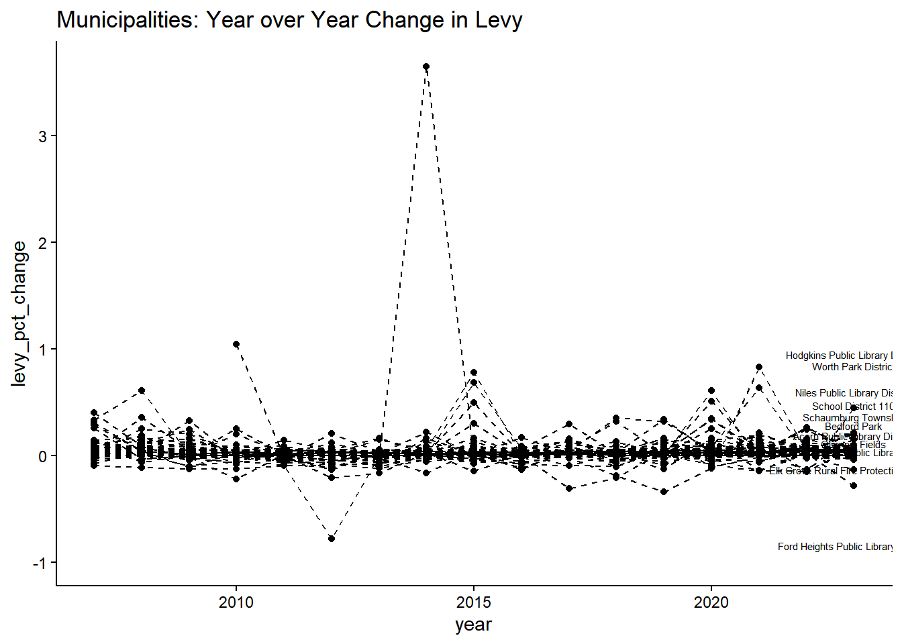
Code
df %>%
filter(levy_pct_change < 50 & triad_name == "South") |>
ggplot(aes(x=year, y = levy_pct_change, group = agency_group)) +
geom_line( linetype = "dashed") +
geom_text(data = endpoints, aes(x = year, y = levy_pct_change, label = agency_group), size = 2, vjust=-1.5, check_overlap = TRUE) +
geom_point() +
theme_classic()+
labs(title = "Municipalities: North Triad Year over Year Change in Levy")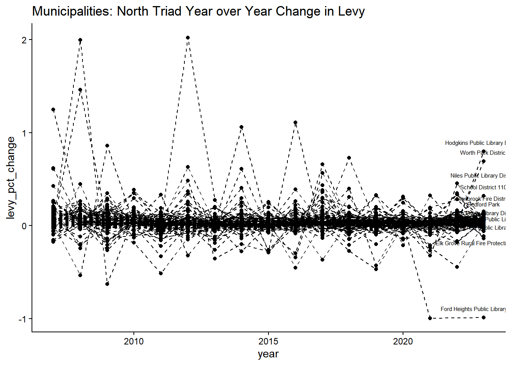
Code
df %>% ggplot() +
geom_line(aes(x=year, y = eav_pct_change, group = agency_group, color = as.factor(home_rule_ind)), alpha = .5) +
geom_text(data = endpoints, aes(x=year, y = eav_pct_change, label = agency_group), size = 2, vjust=-1.5, check_overlap = TRUE)+
theme_minimal()+
theme(legend.position = "bottom")+
labs(title = "Municipalities: Pct Change of Taxed EAV" )Warning: Removed 422 rows containing missing values or values outside the scale range
(`geom_line()`).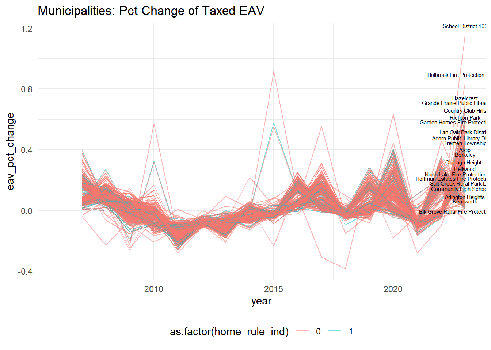
Code
df %>%
ggplot() +
geom_line(aes(x=year, y = av_pct_change, group = agency_group, color = triad_name), alpha = .5) +
# geom_text(data = endpoints, aes(x=year, y = av_pct_change, label = agency_group), size = 2, vjust=-1.5, check_overlap = TRUE)+
theme_minimal()+
theme(legend.position = "bottom")+
labs(title = "Municipalities: Pct Change of Taxed AV" )Warning: Removed 422 rows containing missing values or values outside the scale range
(`geom_line()`).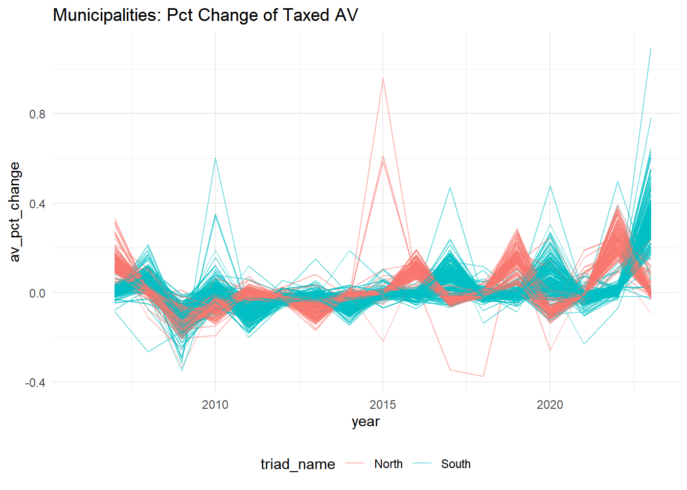